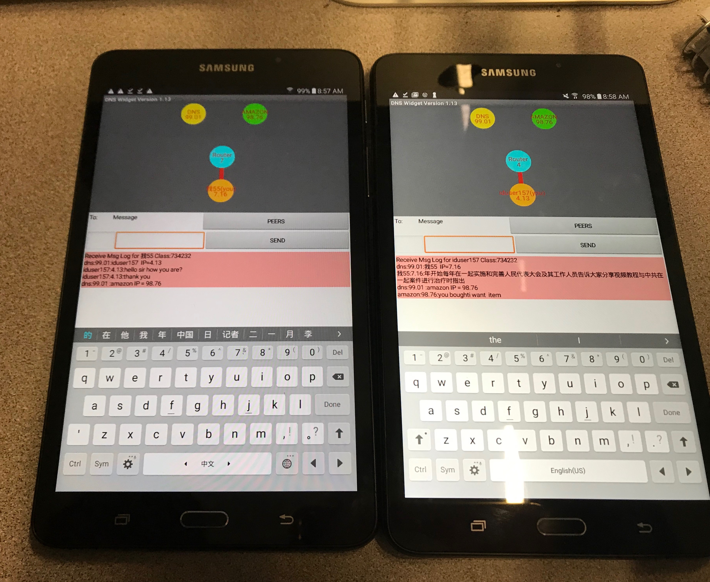
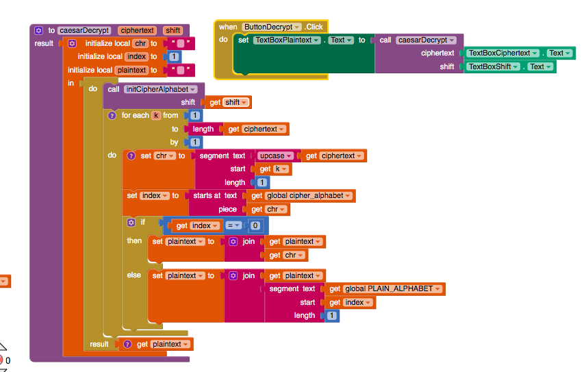

1. What is bandwidth? What do you think affects the differences in bandwidth globally as well as in different locations in the U.S.?
Bandwidth is the maximum rate of data that is downloaded or uploaded in a network. I think how many people are connected to a network would affect it, since many people in San Francisco are connected to a network but people in Utah may not have as much people connected.
2. What is latency? How does it differ from bandwidth? Why is it a useful measure?
Latency is the measure of time it takes for a piece of data to reach its destination. It is different from bandwidth because bandwidth measures rate of download and upload while latency measures time to takes to reach to that certain destination.
3. What is the digital divide? What are some ways to reduce the effects of the digital divide?
Digital divide is the gap between those who have access to internet and computers and those who don't. Some ways to reduce the effects of digital divide is making technology affordable to everyone, having big companies give out technology to people who cannot afford a to buy a computer or laptop, and maybe spread awareness of how internet and technology has changed many generations.
1. (POGIL Activity 1) How does the geographical distance between the source and destination hosts on a network affect latency?
The distance between the source and destination host on a network affecs latency because it affects the time it takes for the piece of data to reach to the destination. So longer geographic distance the longer the piece of data would take to reach.
2. What are the benefits of packet switching?
The benefits of packet switching is less interuption when the packet is sent out. So if your packets are sent out through 5 routers and 2 routers go out, your files will still be transported since 3 are still active.
3. (POGIL Activity 2) Missing Packets. What should happen if a packet goes missing? Who (which layer) would handle this? What action would they have to take? And what additional information would be needed in the packet in order to handle it?
If a packet is lost, then the internet layer should be responsible and send it back to whatever send it. They would have to send the packet differently to avoid the packets to be lost such as changing the headers of the packets.
4. (POGIL Activity 2) Security/Privacy. As the packets are being transmitted through the network, can people other than the sender and receiver read the messages? What methods can we use to protect the message?
Yes, other people than the sender and receiver can read the message. I think we could protect our message by using passwords so you'll have to unlock it before seeing the message.
1. What is DNS and how does it work? How does DNS help you connect to a web server like Amazon?
DNS is a network of servers that maintain domain names with ip addresses. DNS helps you conect to web servers like Amazon by being the middle man of you and Amazon, once you ask for Amazons ip, then you can be connected with Amazon.
2. Include a screenshot of your message log in the DNS Simulation app in Activity 1.
1. Post a screenshot of your code for the caesarDecrypt function.
2. Explain the difference between a function and a procedure. Give an example of a function.
The difference between a function and a procedure is a function gives back a value while a procedure simplifies the code. An example of a function is the code above, the decryption button and the procedure for that code.
3. Explain the difference between global and local variables. Why are local variables easier to debug than global variables?
The difference between global and local variable is that global variable is the whole code while local is just one block of code. Local variables are easier to debug than global variables since it is easier to see and find your mistake. Global variable deals with the whole code so debugging would take way longer than just one block of code.